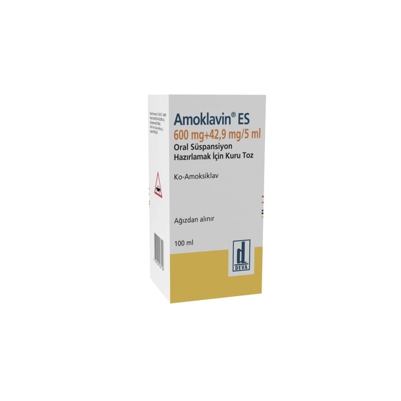

Amoklavin ES 600 mg + 42,9 mg/5 ml Oral Süspansiyon Hazırlamak İçin Kuru Toz, 100 ml

Ne için kullanılır
KT · Bölüm 1AMOKLAVİN ES enfeksiyonların tedavisinde kullanılan bir antibiyotiktir ve enfeksiyona neden olan bakterileri öldürerek işlev görür. Amoksisilin (amoksisilin trihidrat olarak) adı verilen bir penisilin ve amoksisilinin etkisiz hale gelmesini engelleyerek işlev gören klavulanik asit (potasyum klavulanat olarak) olmak üzere iki etkin bileşen içerir.
Amoksisilin trihidrat sığır sütünden üretilmektedir.
AMOKLAVİN ES, sulandırıldığında 100 ml veya 150 ml süspansiyon elde edilen, serbestçe akabilen, beyaz-kremimsi beyaz renkli, meyve-vanilya kokulu, homojen toz karışımı halinde amber renkli, işaretli cam şişelerde bulunmaktadır. Beraberinde 5 ml’lik ölçü kaşığı bulunur.
AMOKLAVİN ES bakterilerin neden olduğu, çocuklarda görülen aşağıdaki enfeksiyonların tedavisinde kullanılır: - Üst solunum yolu enfeksiyonları (tekrarlayan veya kronik orta kulak iltihabı gibi KBB enfeksiyonları dahil olmak üzere) - Bademcik ve solunum yolu enfeksiyonu (tonsillo-farenjit) ve sinüs iltihabı (sinüzit) - Alt solunum yolu enfeksiyonları (akciğer iltihabı gibi) - Deri ve yumuşak doku enfeksiyonları